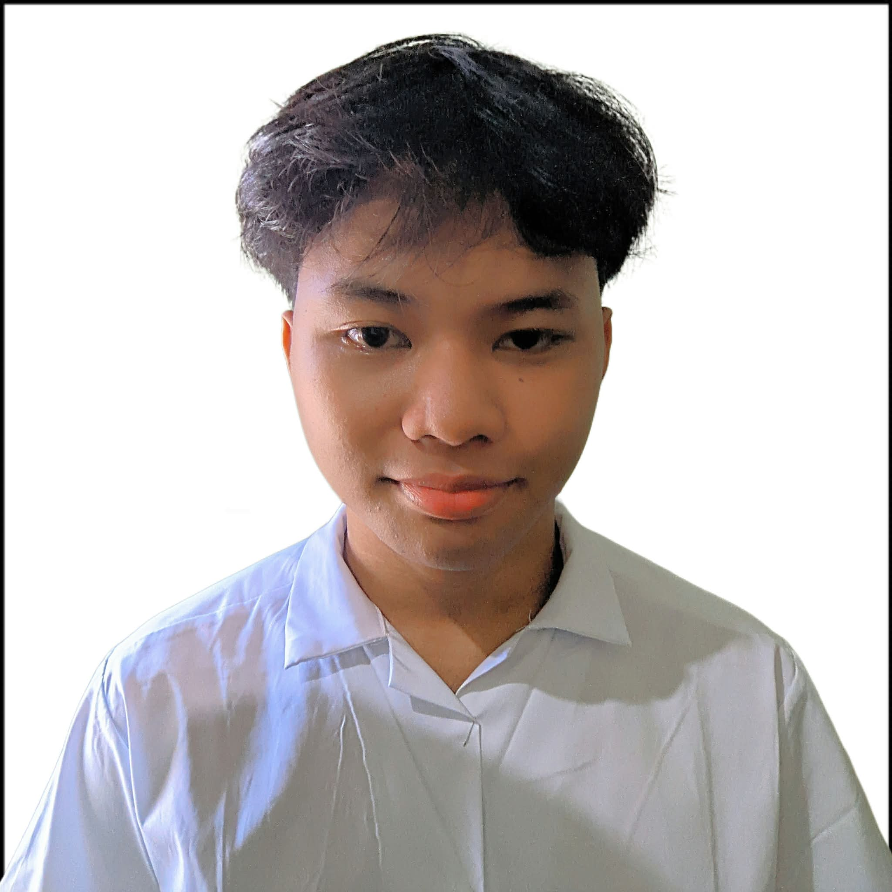
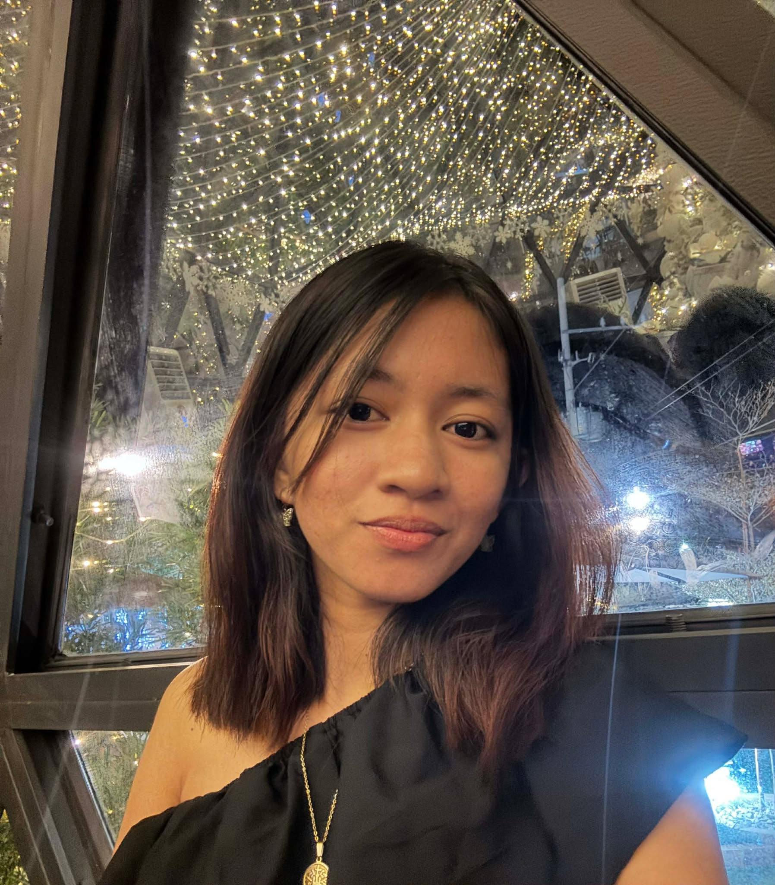
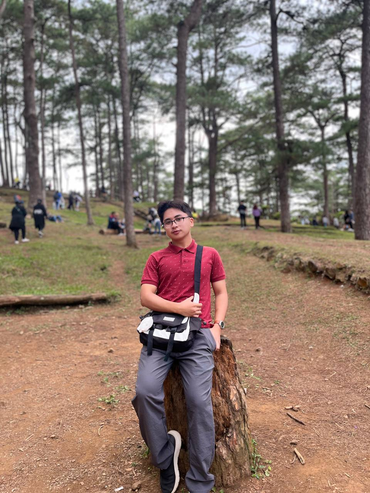
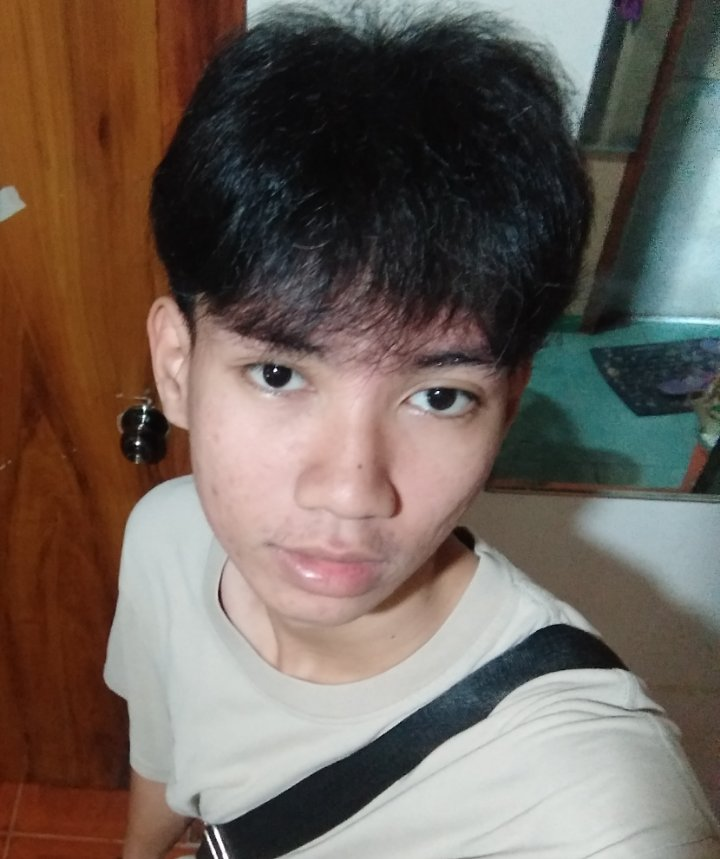
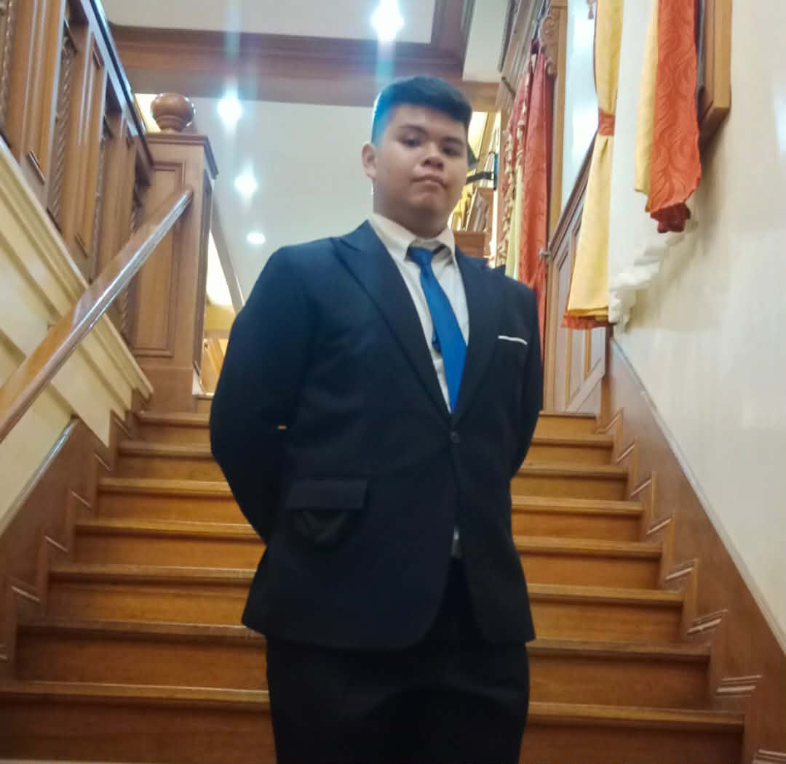

Meet Our Team
The people behind the lens
Austria, Jamella

Salita, Raymundo

Parangat, Dj

Soriano, Jasmin

Mirador, Nathaniel
Camara, Xyle

Dischoso, Aries

"“What we see at first glance is not always what is truly there.”
Our first impression of an image can be misleading. When we look at something quickly, we tend to interpret it based on what is obvious or familiar to us. However, that initial understanding is often incomplete or even incorrect.
Intertextuality is when a work connects to other texts or ideas, showing multiple meanings at once. In a picture, it means many things can be happening or hinted at through different symbols or references..
Tacit Seeing is the ability to notice and understand things without fully thinking about them. It lets us act and make sense of the world even when our attention is distracted or influenced by what we feel, hear, or expect.
The people behind the lens





All the images come together in portraying the movement and rhythm of campus life. The photographs consistently use natural lighting and soft, warm tones, creating a calm and slightly nostalgic atmosphere. The structured framing of hallways, staircases, and open areas guides the viewer’s attention to the students, emphasizing how their stories unfold within the same shared environment.
Email: 25ln0526_ms@psu.edu.ph
Location: Pangasinan, Philippines